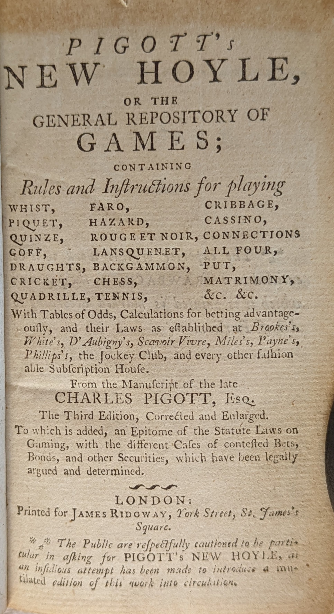

A Descriptive Bibliography of Edmond Hoyle
Copyright © 2014-26 by David Levy
(page updated 2025-04-29)User Guide
Pigott.1.3
Pigott's New Hoyle, printed for James Ridgway, first London edition, third issue, “third” edition, 1796.
 |
Title: | PIGOTT's | NEW HOYLE, | OR THE | GENERAL REPOSITORY OF | GAMES; | CONTAINING | Rules and Inſtructions for playing | [seven lines to left] WHIST, | PIQUET, | QUINZE, | GOFF, | DRAUGHTS, | CRICKET, | QUADRILLE | [seven lines in center] FARO, | HAZARD, | ROUGE ET NOIR, | LANSQUENET, | BACKGAMMON, | CHESS, | TENNIS, | [seven lines to right] CRIBBAGE, | CASSINO, | CONNECTIONS | ALL FOUR, | PUT, | MATRIMONY, | &c. &c. | With Tables of Odds, Calculations for betting advantage-|ouſly, and their Laws as eſtabliſhed at Brookes's, | White's, D'Aubigny's, Scavoir Vivre, Miles's, Paynes's, | Phillips's, the Jockey Club, and every other faſhion|able Subſcription Houſe. | From the Manuſcript of the late | CHARLES PIGOTT, Esq. | The Third Edition, Corrected and Enlarged. | To which is added, an Epitome of the Statute Laws on | Gaming, with the different Caſes of conteſted Bets, | Bonds, and other Securities, which have been legally | argued and determined. | [short rule] | LONDON: | Printed for James Ridgway, York Street, St. James's | Square. | [inverted] ⁂ The Public are reſpectfully cautioned to be parti-|cular in aſking for PIGOTT's NEW HOYLE, as | an inſidious attempt has been made to introduce a mu-|tilated edition of this work into circulation. |
| Collation: | 18o: π1 A4 B–U6 X6(−X6 missing, blank?), χY2 Y–Z6 2A6(−2A6 missing, blank?) [$½ (−B1,2;+A3) signed; signing I3 as I2]; 143 leaves, pp. [i–iii] iv [v] vi–x, [1] 2–238 [239] 240–271 [272–276] [misprinting 21 as 22] |
| Contents: | Signature (Page) Reference | Contents | Signature (Page) Reference | Running Titles |
| π1r (i) | title | |||
| π1v (ii) | ‘[inverted] ⁂ The exporter of this work will be | entitled to a DRAWBACK, as the paper on | which it is printed is marked according to | Act of Parliament.’ | |||
| A1r–X5v (iii–238) | see Pigott.1.1 (1796) | A1r–X5v (iii–238) | see Pigott.1.1 (1796) | |
| χY1r–Y2v (239–242) | ‘ADDENDA. | [short rule] | THE GAME OF CASSINO. | [...]’ | χY1v–Y2v (240–242) | ‘CASSINO.’ | |
| Y1r–Y2r (243–245) | ‘THE GAME OF ALL FOUR, | [...]’ | Y1v (244) | ‘ALL FOUR’ | |
| Y2r–Y2v (245–246) | ‘[...] | THE GAME OF CONNECTIONS, | [...]’ | Y2r (245) | ‘CONNECTIONS.’ | |
| Y2v–Y3v (246–248) | ‘[...] | THE GAME OF PUT, | [...]’ | Y2v–Y3v (246–248) | ‘PUT.’ | |
| Y4r–2A3r (249–271) | ‘AN | EPITOME | OF THE | STATUTE LAWS | ON | GAMING, | [...]’ | Y4v–2A3r (250–271) | ‘LAWS ON GAMING.’ | |
| 2A3v–2A5v (272–276) | ‘Books Sold by James Ridgway, York | Street, St. James's Square. | [...]’ | 2A4r–2A5v (273–276) | ‘Books Sold by J. Ridgway.’ |
| Plates: | on N4v(140) woodblock: ‘[...] | The Draught Table.’ |
| Catchwords: | D6v(36) 4 to [8 to]; I1v(86) ſort, [ſort]; Z5r(263) ed [ted] |
| Press Figures: | B6r(i):4; D4v(o):1; E4r(i):4; E4v(o):3; I1v(i):1; I4r(i):3; M3v(i):1; M4v(o):3; Q6v(o):3; T3r(o):1; X3v(i):3; Y3v(i):1; Z6r(i):2 |
| Publisher: | James Ridgway, Henry Delahoy Symonds |
| Notices: | 1796-04-22 Morning Post and Fashionable World: "Pigott's New Hoyle, with the statute laws on gaming, &c. This day is published, price 3s. bound...the third edition, corrected and enlarged; to which is added, an epitome of the statute laws on gaming, with the different cases of contested bets, bonds, and other securities which have been legally argued and determined...N. B. A Caution.—The public is respectfully cautioned to be particular in asking for Piggott's New Hoyle, as an attempt has been made to introduce a mutilated edition of this work into circulation." |
| Price: | 3s. (advertisement) |
| References: | ESTC T179917, Jessel 1333, Rather 73 |
| Copies Seen: | BFl [I.795/PIGO (b1125012)]; O [Jessel f.614] (ECCO); Levy [1805] |